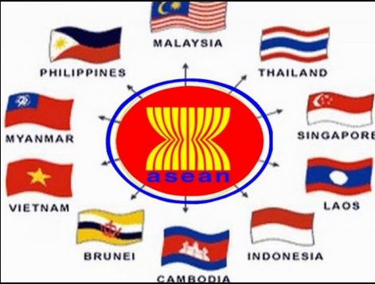

-

ASEAN NEWS
The Association of Southeast Asian Nations, or ASEAN, was established on 8 August 1967 in Bangkok, Thailand, with the signing of the ASEAN Declaration (Bangkok Declaration) by the Founding Fathers of ASEAN, namely Indonesia, Malaysia, Philippines, Singapore and Thailand. Brunei Darussalam then joined on 7 January 1984, Viet Nam on 28 July 1995, Lao PDR and Myanmar on 23 July 1997, and Cambodia on 30 April 1999, making up what is today the ten Member States of ASEAN. AIMS AND PURPOSES As set out in the ASEAN Declaration, the aims and purposes of ASEAN are: To accelerate the economic growth, social progress and cultural development in the region through joint endeavours in the spirit of equality and partnership in order to strengthen the foundation for a prosperous and peaceful community of Southeast Asian Nations; To promote regional peace and stability through abiding respect for justice and the rule of law in the relationship among countries of the region and adherence to the principles of the United Nations Charter; To promote active collaboration and mutual assistance on matters of common interest in the economic, social, cultural, technical, scientific and administrative fields; To provide assistance to each other in the form of training and research facilities in the educational, professional, technical and administrative spheres; To collaborate more effectively for the greater utilisation of their agriculture and industries, the expansion of their trade, including the study of the problems of international commodity trade, the improvement of their transportation and communications facilities and the raising of the living standards of their peoples; To promote Southeast Asian studies; and To maintain close and beneficial cooperation with existing international and regional organisations with similar aims and purposes, and explore all avenues for even closer cooperation among themselves. FUNDAMENTAL PRINCIPLES In their relations with one another, the ASEAN Member States have adopted the following fundamental principles, as contained in the Treaty of Amity and Cooperation in Southeast Asia (TAC) of 1976: Mutual respect for the independence, sovereignty, equality, territorial integrity, and national identity of all nations; The right of every State to lead its national existence free from external interference, subversion or coercion; Non-interference in the internal affairs of one another; Settlement of differences or disputes by peaceful manner; Renunciation of the threat or use of force; and Effective cooperation among themselves. ASEAN COMMUNITY The ASEAN Vision 2020, adopted by the ASEAN Leaders on the 30th Anniversary of ASEAN, agreed on a shared vision of ASEAN as a concert of Southeast Asian nations, outward looking, living in peace, stability and prosperity, bonded together in partnership in dynamic development and in a community of caring societies. At the 9th ASEAN Summit in 2003, the ASEAN Leaders resolved that an ASEAN Community shall be established. At the 12th ASEAN Summit in January 2007, the Leaders affirmed their strong commitment to accelerate the establishment of an ASEAN Community by 2015 and signed the Cebu Declaration on the Acceleration of the Establishment of an ASEAN Community by 2015. The ASEAN Community is comprised of three pillars, namely the ASEAN Political-Security Community, ASEAN Economic Community and ASEAN Socio-Cultural Community. Each pillar has its own Blueprint, and, together with the Initiative for ASEAN Integration (IAI) Strategic Framework and IAI Work Plan Phase II (2009-2015), they form the Roadmap for an ASEAN Community 2009-2015. Please click here for the ASEAN Political-Security Community Video. Please click here for the ASEAN Economic Community Video. Please click here for ASEAN Socio-Cultural Community Video. Please click here for ASEAN History and Purposes. ASEAN CHARTER The ASEAN Charter serves as a firm foundation in achieving the ASEAN Community by providing legal status and institutional framework for ASEAN. It also codifies ASEAN norms, rules and values; sets clear targets for ASEAN; and presents accountability and compliance. The ASEAN Charter entered into force on 15 December 2008. A gathering of the ASEAN Foreign Ministers was held at the ASEAN Secretariat in Jakarta to mark this very historic occasion for ASEAN. With the entry into force of the ASEAN Charter, ASEAN will henceforth operate under a new legal framework and establish a number of new organs to boost its community-building process. In effect, the ASEAN Charter has become a legally binding agreement among the 10 ASEAN Member States.x`